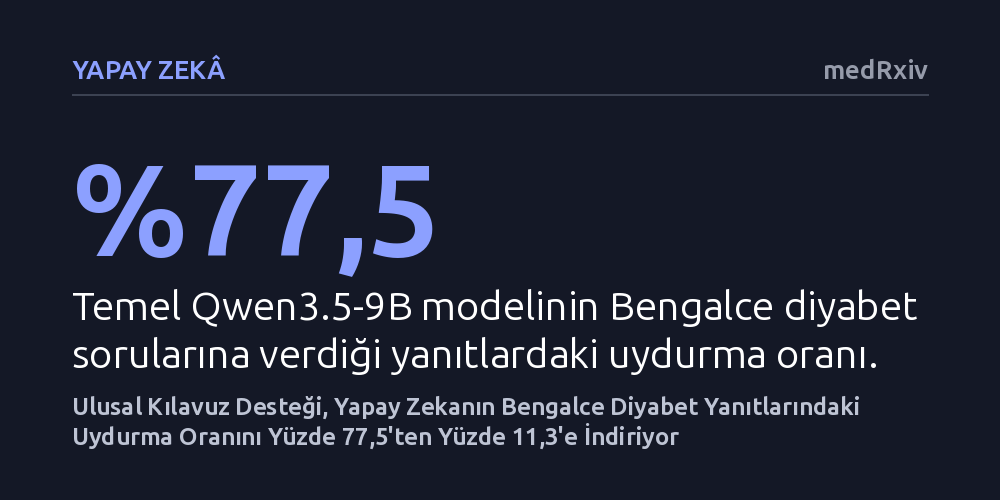

YAPAY-ZEKA · medRxiv · 2026-10-19
Araştırmacılar, açık kaynaklı yapay zeka modellerinin Bengalce diyabet sorularında ne sıklıkla uydurma bilgi ürettiğini ve ulusal kılavuza dayalı bilgi desteğinin bu hataları azaltıp azaltmadığını inceledi. Kılavuz desteği zayıf bir modelin hata oranını yüzde 77,5'ten yüzde 11,3'e düşürse de hiçbir model uydurmalardan tamamen arınamadı.
Yapay zeka modelleri yerel klinik kılavuzlarla desteklense bile düşük kaynaklı dillerdeki sağlık danışmanlığında hekim denetimi olmaksızın hastalara güvenle emanet edilemez.

Günümüzde büyük dil modelleri sağlık tavsiyesi almak amacıyla hastalar ve danışanlar tarafından giderek daha yaygın biçimde kullanılıyor. Ancak bu sistemler, kulağa son derece akıcı ve ikna edici gelen fakat tıbben tamamen yanlış ya da desteksiz bilgiler üretebiliyor; yapay zeka yazınında bu olguya "halüsinasyon" ya da uydurma adı veriliyor. İngilizce gibi kaynak açısından zengin dillerde bu güvenlik açıkları yoğun şekilde incelenirken, dünya çapında yüz milyonlarca insanın konuştuğu Bengalce gibi düşük kaynaklı dillerde modellerin klinik doğruluğu ve uydurma riskleri büyük ölçüde bilinmezliğini koruyor.
Diyabet gibi beslenme, yaşam tarzı ve hassas ilaç dozu ayarlamalarının doğrudan hayati sonuçlar doğurduğu kronik bir hastalıkta, yapay zekanın vereceği hatalı bir tıbbi öneri hastanın yaşamını tehlikeye atabilir. Bu nedenle araştırmacılar, yerel sunucularda çalıştırılabilen açık ağırlıklı yapay zeka modellerinin Bengalce diyabet sorularına verdikleri yanıtlardaki uydurma oranlarını ölçmeyi ve bu hataların yerel bir tıbbi kılavuza dayandırılarak sınırlandırılıp sınırlandırılamayacağını araştırmayı hedefledi.
Araştırma kapsamında diyabetin altı farklı klinik alt alanını temsil eden 40 gerçekçi hasta sorusu hazırlandı. Bu sorular açık ağırlıklı dört farklı genel amaçlı modele (Qwen3.5-9B, TigerLLM-9B, Qwen3.6-35B-A3B ve Gemma-4-26B-A4B) herhangi bir ön eğitim verilmeden, sıfır örnekli istem yöntemiyle ikişer defa yanıtlatıldı.
Araştırmacılar ayrıca zayıf bir modeli güçlendirmek amacıyla "BanglaDiaRAG" adını verdikleri özel bir sistem geliştirdiler. Bu sistem, Bangladeş Ulusal Diyabet Kılavuzu'ndan tıp doktorları tarafından titizlikle denetlenmiş bir bilgi tabanı oluşturdu ve Qwen3.5-9B modeline hem anlamsal yoğun arama (BGE-M3) hem de sözcük tabanlı seyrek arama (BM25) tekniklerini birleştiren hibrit bir bilgi getirme mekanizması ekledi.
Modellerce üretilen toplam 400 yanıt, hangi modele ait olduğu gizlenerek iki hekime sunuldu. Hekimler yanıtları tıbbi doğruluk, eksiksizlik, güvenlik, okunabilirlik ve güvenilirlik olmak üzere beş temel ölçüt üzerinden 0 ile 1 arasında puanladı. Tıbbi doğruluk puanı 0,70'in altında kalan tüm yanıtlar klinik açıdan uydurma kabul edildi.
Değerlendirme sonucunda modeller arasındaki güvenlik farkları son derece belirgin çıktı. Temel Qwen3.5-9B modeli soruların yüzde 77,5'inde uydurma yanıt üreterek klinik açıdan tek başına kullanılamayacak bir performans sergiledi. Buna karşılık, aynı modele ulusal kılavuz desteği eklendiğinde (BanglaDiaRAG) uydurma oranı 66,3 puanlık büyük bir düşüşle yüzde 11,3 seviyesine indi ve modelin tüm ölçütlerdeki başarısı istatistiksel olarak anlamlı biçimde yükseldi.
Genel amaçlı açık modeller arasında ise Gemma-4-26B-A4B yüzde 2,5 ve TigerLLM-9B yüzde 3,8 uydurma oranıyla en başarılı sonuçları verdi. Daha büyük bir mimariye sahip Qwen3.6-35B-A3B ise yüzde 22,5 uydurma oranında kaldı. Kılavuz destekli BanglaDiaRAG sistemi, beş ölçütün tamamında Qwen3.6-35B-A3B modelini geride bırakmayı ve TigerLLM-9B modelini yakalamayı başardı.
Bununla birlikte çalışmanın ortaya koyduğu en kritik bulgulardan biri, kılavuz desteği alan modelin geride kalan yüzde 11,3'lük hatalı yanıtlarının genel ve belirsiz değil; son derece özgül, kendinden emin ve potansiyel olarak zararlı yanlışlar içermesiydi. Ayrıca bu sistem güvenlik, okunabilirlik ve güvenilirlik boyutlarında Gemma modelinin gerisinde kaldı.
Elde edilen bulgular, yerel ve doğrulanmış klinik kılavuzlara dayalı bilgi getirme yöntemlerinin, görece zayıf genel amaçlı bir modeli çok daha güvenli bir sağlık asistanına dönüştürebileceğini açıkça gösteriyor. Ancak araştırmanın en net uyarısı, seçilen temel modelin kalitesinin en az bilgi getirme yöntemi kadar belirleyici olduğu ve hiçbir sistemin uydurma riskini sıfıra indiremediğidir.
Sonuç olarak, yapay zeka modelleri düşük kaynaklı dillerde sağlık alanında hastalara doğrudan tavsiye veren sistemler olarak sunulmadan önce sıkı bir klinik gözetimden geçirilmelidir. Bilgi getirme desteği eklenmiş olsa dahi, hekim denetimi olmaksızın üretilen tıbbi tavsiyelerin hastalar tarafından doğrudan uygulanması ciddi sağlık riskleri barındırmaya devam etmektedir.